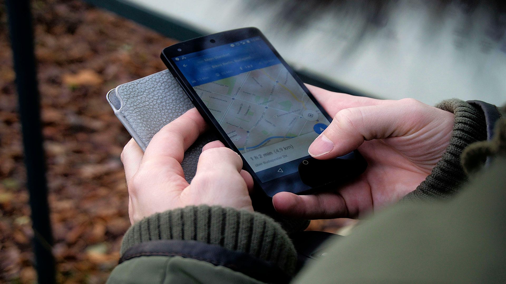
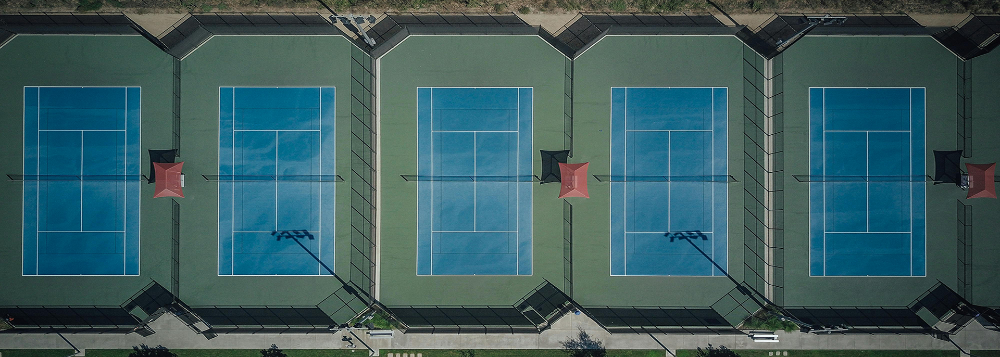

Quienes Somos
Descubre nuestra plataforma e historia
Historia
Fundada en 2022, nuestra aplicación surgió de la pasión compartida de un grupo de amigos por el deporte y la comunidad. Observando la dificultad para encontrar y reservar espacios deportivos adecuados, decidimos crear una solución que facilitara este proceso. Desde entonces, hemos crecido para convertirnos en la plataforma líder en Chile para la reserva de canchas, conectando a miles de deportistas con instalaciones en todo el país. Nuestro compromiso es con la accesibilidad y la conveniencia, permitiendo a todos los usuarios reservar su espacio ideal con solo unos clics.
Misión
Nuestra misión es simplificar el acceso a instalaciones deportivas, promoviendo un estilo de vida activo y saludable entre los chilenos. Nos esforzamos por ofrecer una plataforma intuitiva que conecta canchas de calidad con aquellos que buscan un espacio para entrenar, competir y disfrutar. Al hacer que la reserva sea fácil y accesible, estamos ayudando a construir una comunidad más activa y conectada en Chile.
Beneficios
No importa donde estes
Disponibilidad
Gracias a nuestra aplicación, la disponibilidad de canchas deportivas se extiende a lo largo y ancho de Chile, permitiendo a los usuarios acceder y reservar instalaciones deportivas desde cualquier parte del país con solo unos pocos clics.
Practicidad
Con una interfaz amigable y procesos optimizados, los usuarios pueden gestionar todas sus necesidades de reserva desde un solo lugar. Desde la planificación hasta la confirmación, todo se maneja de manera centralizada y automática, lo que garantiza una experiencia sin esfuerzo y más tiempo para disfrutar del juego.
Gestión
La gestión eficiente de reservas es fundamental en nuestra aplicación. Los usuarios no solo tienen la capacidad de reservar canchas, sino también de modificar sus reservas con facilidad, gestionar cancelaciones y revisar su historial de reservas. Este nivel de control ofrece una flexibilidad incomparable, permitiendo a los deportistas adaptarse a cambios de último momento sin complicaciones.
¿Tienes canchas para reservar?
Si eres propietario o gestor de una cancha, nuestra aplicación ofrece una oportunidad excepcional para maximizar la visibilidad y el uso de tus instalaciones. Al unirte a nuestra red, tu cancha será accesible a una vasta comunidad de deportistas activos y equipos en busca del lugar perfecto para entrenar y competir. No solo aumentarás la ocupación de tu espacio deportivo, sino que también simplificarás la gestión de reservas y pagos a través de nuestra plataforma tecnológica, asegurando un flujo constante de clientes sin las complicaciones administrativas. Únete a nosotros y transforma tu cancha en un centro deportivo más rentable y popular.
Testimonios
Descubre lo que opinan los demás
“¡Muy cómoda para administrar mis Canchas de Tenis!”

Claudio
Club de Tenis Graneros
“Viajo bastante, con esta App puedo reservar donde sea 🤗”

María
Usuario de BUSCACANCHA.CL
“Automatizó todos mis procesos, los clientes se duplicaron!”

Fernando
Planeta Soccer